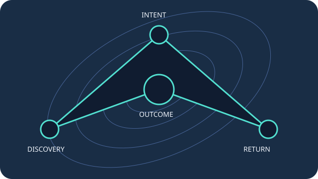

Campaign mandate
Build demand for a fictional home energy audit service.
Convert qualified appointment requests into completed audits.
Measure incremental contribution rather than platform-attributed revenue.
Multichannel advertising and performance intelligence for a fictional home energy audit service.
Explore the model
Build demand for a fictional home energy audit service.
Convert qualified appointment requests into completed audits.
Measure incremental contribution rather than platform-attributed revenue.
Prospecting: homeowners researching energy efficiency.
Retargeting: visitors who explored audit eligibility.
Search: people actively seeking local energy assessments.
Track qualified bookings, completed audits and contribution.
Deduplicate bookings using a first-party appointment ID.
Exclude cancelled appointments from completed-audit counts.
Illustrative spend: $12,000 across three channels.
Completed audits: 160; contribution per audit: $110.
Contribution after media: $5,600 before fixed overhead.
Cost per qualified booking = spend / qualified bookings.
Completion rate = completed audits / qualified bookings.
Net media contribution = completed audits × unit contribution − spend.
Video: explain what happens during an audit.
Search: match service intent and location.
Retargeting: address scheduling and eligibility concerns.
Randomize eligible users into mutually exclusive groups.
Compare educational video with a short service walkthrough.
Primary outcome: completed audits per eligible user.
Use a randomized holdout to estimate incremental bookings.
Cap frequency and suppress existing appointments.
Assess incremental contribution after media cost.
Compare search-only against search plus educational video.
Keep geography and service availability comparable.
Use first-party outcomes rather than summed platform conversions.
Reserve funding for high-intent search, discovery and retargeting.
Hold a separate experimental reserve.
Reallocate only after completion and contribution evidence matures.
Model bookings using channel-specific acquisition costs.
Apply completion probability and available technician capacity.
Stress-test costs, demand and contribution before scaling.
Search: service keywords, local radius, booking landing page.
Video: educational audiences, frequency limit, eligibility page.
Display: consented site visitors, booking exclusions, capped exposure.
Headline: Understand your home energy use.
Description: Explore an independent home efficiency assessment.
CTA: Check appointment availability.
Opening: A thermal scan reveals an unseen draft.
Middle: Technician explains the audit process.
Closing: Discover your next efficiency step.
Headline: Ready to explore your home efficiency?
Visual: stylized house with thermal contour lines.
CTA: Explore available appointments.
Review booking quality and completed-audit cost weekly.
Pause misleading creative or capacity-constrained locations.
Increase spend gradually when marginal contribution remains positive.
Pre-register primary outcome, duration and stopping rules.
Estimate sample size from baseline conversion and minimum effect.
Report uncertainty, exclusions and negative results.
Pilot the integrated mix before expanding geographically.
Scale only when incremental contribution and service capacity align.
Maintain a holdout and revisit assumptions after each test.
Illustrative assumptions, not measured campaign results. Costs and completion rates are editable.